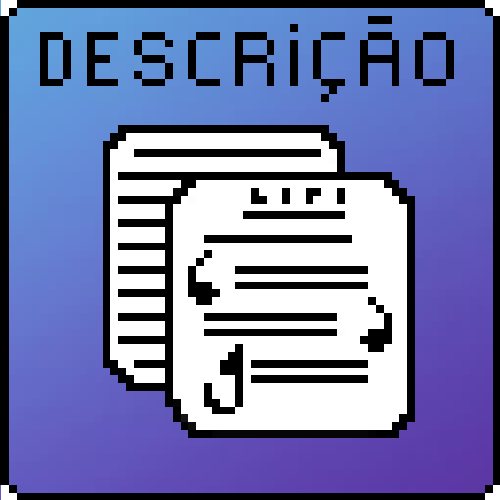

1°) Descrição geral do jogo:
O enredo do jogo se caracterizará pela tentativa de 4 jovens dos anos 70 que tentam ganhar fama e dinheiro com sua banda de rock, porém para que isso aconteça, você como jogador, irá ajudá-los a poder alcançar a fama, estando presente desde o começo de sua carreira, em shows em bares, baladas e restaurantes.
Quanto maior seu progresso na história e na visibilidade da banda, maior fica a dificuldade do game e de seus objetivos/missões respectivamente. Aumentando também a diversidade de elementos in-game, como aparência dos integrantes, envelhecimento dos personagens, aquisição de novos instrumentos e ferramentas.
Não haverá um final em si no jogo, mas sim um certo “nível de progresso” em que terá um fim na continuidade da história com uma premissa que acontecerá uma continuação do jogo. Mesmo já tendo completado todos os objetivos do jogo, ainda será possível apresentar shows e tocar músicas assincronicamente à história do jogo.